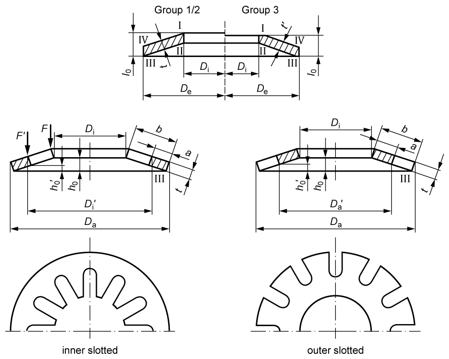

|
|
|


碟簧
碟簧的计算在 DIN EN 16984 (2017) [102] 中描述。重量和质量要求按照 DIN EN 16983 (2017) [103] 处理。
工况数据
当您指定载荷时，可以将自己的值用作弹簧力或行程。您还可以指定弹簧承受静态、准静态还是动态应力。
DIN EN 16984 中规定的计算适用于带或不带支承区域的碟簧，其比值为 16 < De/t < 40 和 1.8 < De/di <2.5，且材料符合 DIN EN 16983 的规定。
几何
按照 DIN EN 16983 的规定，碟簧分为 3 组和 3 个系列。组 1 和组 2 包含无支承区域的弹簧，而组 3 包含带支承区域的弹簧。组 1 的碟片厚度小于 1.25 mm，组 2 介于 1.25 和 6 mm 之间，组 3 介于 6 和 14 mm 之间。这些组中弹簧的硬度不同。A 系列包含硬弹簧，即它们可以在较短的弹簧行程中承受更大的力。其次是 B 系列和 C 系列，它们可以在较大的弹簧行程中承受最小的力。
您也可以输入带内槽或外槽的碟簧。此外，您还可以设置增大的内径或减小的外径。此计算根据 Niemann 第 1 卷第 5 版 (2019) [104] 创建。比值 (Da-Di')/(Da-Di) 用作内槽碟簧系数 K4 的近似值，比值 (Da'-Di)/(Da-Di) 用于外槽碟簧。如果碟簧设计正确，力在特定的弹簧行程中持续增大。
如果选择，几何数据的输入字段将变为可用，您可以在其中输入自己的值。这种计算类型仅适用于没有支承区域的弹簧，因为厚度比 t'/t 未知，但计算仍需要该比值。

图 49.1：碟簧的尺寸
Disc Springs
The calculation for disc springs is described in DIN EN 16984 (2017) [102]. The mass and quality requirements are handled according to DIN EN 16983 (2017) [103].
Operating data
When you specify a load, you can use your own value as the spring force or travel. You can also specify whether the spring is to be subject to static, quasi-static or dynamic stress.
The calculations specified in DIN EN 16984 are for disc springs with or without bearing areas for the ratios 16 < De/t < 40 and 1.8 < De/di <2.5 and materials specified in DIN EN 16983.
Geometry
As specified in DIN EN 16983, disc springs are divided into 3 groups and 3 sequences. Groups 1 and 2 contain the springs without a bearing area, whereas group 3 has the springs with a bearing area. The disc thickness for group 1 is less than 1.25 mm, in group 2 it is between 1.25 and 6 mm, and in group 3 it lies between 6 and 14 mm. These groups differ in the hardness of the springs in them. Series A includes hard springs, i.e. they can withstand greater forces in a shorter spring travel. This is followed by series B and series C which can withstand the least force in a larger travel of spring.
You can also input disc springs with inside or outside slits. In addition, you can either set the increased inside diameter or the reduced external diameter. This calculation has been created according to Niemann, Volume 1, 5th Edition (2019) [104]. The ratio (Da-Di’)/(Da-Di) is used as an approximation for coefficient K4 for inside-slotted disc springs, and the ratio (Da’-Di)/(Da-Di) is used for outside-slotted disc springs. If the disc spring is designed correctly, the force increases constantly over a specific spring travel.
If you select , the input fields for geometry data become active, and you can enter your own values in them. This type of calculation only applies for springs without a support area, because the ratio of the thicknesses t'/t is not known, but it is still required for the calculation.
Figure 49.1: Dimensions of the disc springs